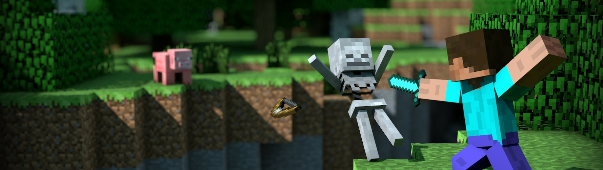
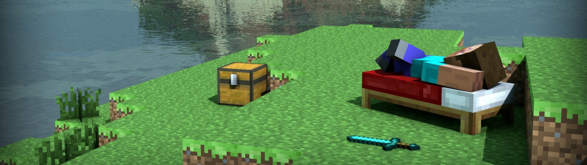

La versión física de Minecraft llegó a nuestras oficinas y en un ejercicio tardío, pero necesario, decidimos reseñarlo. Pocos títulos en la historia han escalado hasta convertirse en un fenómeno global; Minecraft está presente en prácticamente todas las plataformas, ha vendido aproximadamente 50 millones de copias y recientemente fue adquirido por Microsoft en $2.5 mil MDD. Podríamos hablar de él como producto, pues es imposible ignorar su impacto, pero lo que aquí nos compete es el juego, en específico, la versión para PlayStation 4.
El mundo se ha generado y a tu alrededor todo es desconocido, no importa cuántas veces hayas jugado, si creaste un nuevo mundo, no sabes dónde estás, es hora de prepararse porque durante la noche todo se vuelve peligroso. Comienzas por talar un árbol y construir herramientas y el refugio que te ayudarán a sobrevivir esa larga primera noche en la que tus recursos son escasos y apenas puedes ubicar el lugar donde te encuentras; tal vez no recuerdes cuántos mundos has creado, cuántos proyectos has abandonado o cuántas veces derrotaste al Ender Dragon, pero nunca olvidarás tu primera noche en Minecraft.
Al llegar la mañana aún hay algunos monstruos, en tu mano sostienes una pala de madera con stats a la mitad y tu refugio fue destruido por un creeper que te atacó por la espalda, ahora estás listo para enfrentar al elemento más abrumador del juego: las posibilidades. Puedes construir la torre Eiffel con cubos de acero que obtendrás minando durante días o viajar al Nether y reunir lo necesario para crear un jefe y derrotarlo o simplemente, ser un nómada que viaje por el mundo explorando cuevas y escalando montañas; nadie te obliga a nada, sólo tú y tu ambición.
Una de las mejoras más notables es el campo de visión y el tamaño del territorio, que equivale a 36 veces el que existe en las consolas de generación pasada. Caminar de una orilla a otra del mapa en un terreno completamente plano te toma alrededor de 25 minutos, tiempo que se incrementa drásticamente cuando hay árboles, montañas y océanos. Ésta es una buena noticia para los que disfrutan la exploración, aunque la experiencia dista mucho de los mundos casi infinitos de PC y Pocket Edition.
Otro aspecto que se vio beneficiado con el poder técnico de la nueva generación fue el modo de pantalla dividida, donde pueden participar hasta 4 jugadores; hay que tener presente que no es muy cómodo jugar en pantallas menores a 42”. La entrega también fue optimizada para usar el control a distancia desde PlayStation Vita, el cual funciona muy bien, pero no te permite configurar los botones táctiles a tu gusto.
Una característica bienvenida es la posibilidad de importar mundos de la versión de PlayStation 3, por lo que podrás continuar tus proyectos inconclusos en la nueva generación de consolas. Además, puedes descargar completamente gratis todos los paquetes de texturas y skins que hayas comprado en la versión anterior.
Otra novedad es la incorporación de nuevas canciones, todas creadas por el músico alemán C418, las cuales mantienen una atmósfera de melancolía y contemplación que, sumada a los gráficos de baja resolución, dotan al juego de personalidad.
Minecraft: PlayStation 4 Edition amplía los límites técnicos de este título en consolas al privilegiar a sus fanáticos y mantener el rumbo sin necesidad de adiciones innecesarias o de poco valor. Sin embargo, esto también juega en su contra debido a que la fórmula, aunque exitosa, tiene muchos elementos adicionales en su contraparte de PC e incluso la edición para celulares posee mundos más grandes que los de esta versión de consolas de nueva generación. El mundo limitado tal vez era algo pasable cuando salió para consolas por primera vez, pero en un mundo en el que en tu iPhone puedes tener un mundo casi infinito, no tenerlo dicha característica en un PlayStation 4 es inadmisible.
Yendo hacia el aspecto musical, es una de las pocas cosas que me molesta un poco. Desde un inicio, no me agradan demasiado las melodías de fondo, o los sonidos que colocan, pero lo que si me llega a molestar es que aparecen de forma aleatoria. Pero en cuanto a los sonidos generales del juego, están bien. No es un apartado que sobresalga, incluso diría que resulta de los más descuidados. No obstante, es cierto que tampoco es que haga mucha falta.
Otra ventaja que tiene es que existe el multijugador. Además de poder jugar con amigos en un mundo, construir juntos y demás, existen diferentes modalidades de juego que se pueden probar. Alguna de ellas pueden ser «Los juegos del hambre», o «Escapa de la bestia», y un gran etcétera. Es una manera más de explotar la infinita forma de jugarlo.
Como digo, puedes ponerte muchas y diferentes metas, y con el objetivo de cumplirlas quedas enganchado al juego, o al menos eso me ocurre a mí. Claro, llega un punto en el que después de tanto jugar, cumples todas las metas, y si ya te has aburrido de repetir el proceso en varios mundos, algo bueno que puedes hacer es agregar mods —aunque esta es una ventaja que solo se puede acceder si se juega desde PC—. Existen gran variedad de mods que pueden alterar y agregar nuevas cosas al juego. Es cierto que no son oficiales, pero la mayoría de la gente termina recurriendo a ellos para volver el juego base más variado. Hay gran cantidad, que pueden incluir, por ejemplo: nuevos objetos, nuevos animales, tener la posibilidad de establecer relaciones con aldeanos y crear familias, nuevos enemigos, nuevos mundos, etc.
Respecto al juego en sí, yo lo veo muy entretenido. Tiene una dinámica simple y efectiva, la generación aleatoria de los mundos, el mapa infinito por explorar, y la posibilidad de crear todas las construcciones que se nos plazca es, sin duda, lo que más destacaría. En lo persona, descubrir el mundo es probablemente lo que más disfruto. Explorar y sin saber con qué me encontraré, tanto en la superficie, debajo de ella o incluso en los mares, es de lo más entretenido.
Lo considero un juego estupendo, con un montón de posibilidades para explorar y una absoluta libertad. Le recomendaría a todo el mundo que lo jugase, incluso aquellos que lo juzgan por su popularidad o sus gráficos, merece al menos una oportunidad.
Minecraft es un juego muy útil para iniciar a los chic@s en el mundo de la programación ya que se ve algo de código Java, especialmente a la hora de modificar las clases de los personajes, crear variables y condicionantes. Los mods, son el camino para enseñarles código de forma sencilla. Además, para jugar en modo multijugador, podemos aprender a crear nuestros propios servidores.